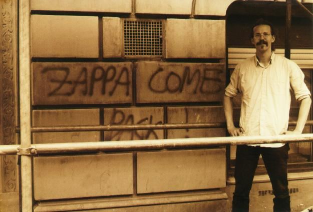
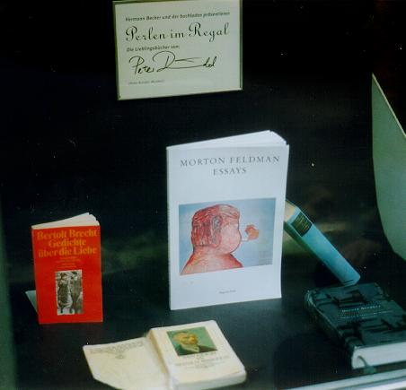
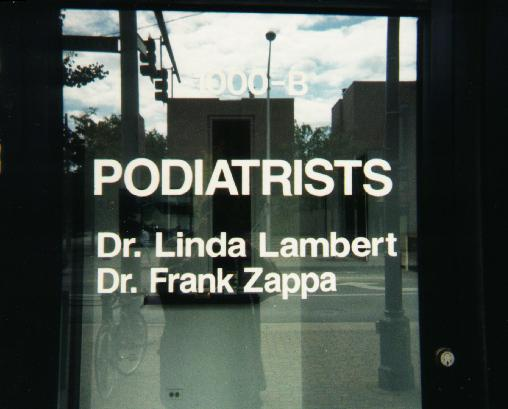

A most modest tribute to the great
Frank Zappa

[after Donald Roller-Wilson/Raumberger]
|
Some people are hot,
some people are cold,
some people's not very
swift to be hold.
Some people do it,
some see right through it
Some wear pojama
if only they knew it.
The pojama people are boring me to pieces...
|
Petrified opinions - last changed sometime in 2003
|
Köln, Germany, June 1998 (photo by Inge Knichel).
|

|
After 20 years of intensive listening I state:
- No Zappa album is totally devoid of interest.
Man from Utopia has The Radio is Broken,
a hilarious update of Cheepnis;
Tinseltown has The Blue Light.
Even the bootlegs have documentary value.
Family Trust: get those finished albums out,
in particular Trance-Fusion and the Varese-album,
put out some unedited material, don't try to imitate the inimitable -
Frank Zappa plays the music of Frank Zappa was no good sign.
- Frank's compositions are most often somehow "stories set to music", thus
the guitar solos function the best in the context of a song.
The vocals added later to the Sleep Dirt CD are congenial,
enhance the music, should probably have been there in the first place;
conceptual continuity in Them or Us, the book.
- The '88 band had great horn sound, but is too much Keneally. Too many
musical quotes (e.g. Anderson) are his and not FZ's. Although new colors
were added to the guitar palette, as heard
on Any Kind of Pain, Frank's guitar playing was at a low point.
- Frank had the best guitar sound around '74.
He probably had the best chops with the underrated '84 band.
- The Thing Fish with Ike Willis is genuinely brilliant,
seriously, even if it disintegrates towards the end (the long form was
never a strong point with FZ).
Even found use for a cheap speech synthesizer.
- "It's all one album". Yes, but the following are,
in no particular order, absolutely indispensable:
- Freak Out!
- Waka/Jawaka
- Jazz from Hell
- Cruising with Ruben and the Jets. The LP is preferable to the CD
version with the Wackerman/Barrow (Thunes?) drum/bass.
- Thing Fish. There are some unfortunate vocal overdubs on the CD version
of He's so gay
- Zoot Allures
- Uncle Meat. Ian Underwood whips it out. Also Dog Breath,
Nine types of industrial pollution (Zappa on the rare acoustic),
Uncle Meat variations
- Studio Tan. The ending of the CD version of Greggary Peccary is
different from that of the LP, fatter synclavier texture, which
sounds strangely wrong
- Joe's Garage, esp. Acts I-II-III
- One Size fits All
- The best book on Frank Zappa is
Watson's Negative Dialectics.
Watson's richly adorned attempts to put FZ into a larger context are
sociologically much to the point, but Out to Lunch is no musicologist.
Also the short CD-format booklet-type Complete Guide is very apt
and useful.
Documentary
I saw three and three-quarters of a show.
Copenhagen, May 30, 1980, Forum:
My last high school year, and first rock concert. I was
baffled and offended by the people, the beer, the smoke, the lighters,
the noise- and the sound-level, all the rituals of a big rock
show (Rock has gone entirely too preposterous?). I was also very
excited. Forum is a medium sized exhibition hall, takes a
few thousand people, sometimes used for
bike races and in these days with lots of wood, so the acoustics weren't
probably that bad. Frank had long, still black hair and opened solo-spot
with something which sounded like Chunga's Revenge, and that was fantastic.
The rest is blurred. Cosmik Debriz? Stuff from Zoot Allures?
Was Tommy Mars there? Definitely
Ray White was in the band, and probably they did the Illinois Enema Bandit,
otherwise material which was mostly unknown to me, Sheik Yerbouti being
fairly recent.
Copenhagen, May 11, 1982, Brøndby Hallen:
At that time I was in a puritan phase suffering from
the peculiar misconception that the
only good material was by the original Mothers of Invention, and although
there do seem to be some qualitative shift or shift of emphasis at some point
during the seventies, check out Thing Fish (or Jazz from Hell)
for cure of this delusion. I attended the
show almost by accident, and the acoustics in the sports arena were
abysmal. Ed Mann was in the band, and as always not so great to look at. They
played newer material from YAWYI and TR which at that point I didn't know so
well (see the above). This might actually have been a good show despite
the unredeemable acoustics.
Copenhagen, April 25, 1988, Falkoner Teatret:
Fantastic show. Frank trying to entertain Groucho Marx style, but fortunately
treated us to a lot of guitar solos, mostly seated on a bar stool under a
small rotating disco ball. Fantastic band, fantastic sound, horns,
Bruce and Walt Fowler.
Ike Willis fooling around with monster-finger glove and assorted
stupidities from the toy store.
Nice guy Keneally on stunt guitar and vocals.
Opened with Heavy-Duty Judy. Packard Goose medley with
some Swaggart, I seem to remember. Torture, maybe so? Alien Orifice. Big
Swifty with Synclavier improvisations and lots of horns.
Some new songs. Beatles medley - I was offended, why did he bother with
this bland material?
Sofa, and towards the end of a beautiful second set came the OSFA suite.
Frankfurt, September 18, 1992, Alte Oper:
|
The second of the original Yellow Shark concerts. At this evening Frank was
already too ill to be present. The show was conducted by Peter Rundel,
a really fine conductor, and
it was a really fine modern music Ensemble... The psychedelic lightshow
gave a strange new glow to the instruments of the large chamber
orchestra and together with the 6-channel sound system
(and The Dog Breadth Variations) somehow reminded me of the psychedelic
cutting on A Token of His Extreme,
parts of which can still be seen in The Dub Room Special. The Dog
Breath/Uncle Meat themes were played, BeBop Tango and Pound for a Brown,
as was an impressive version of G-Spot Tornado scored for "real instruments"
(and with LaLaLa human Steps);
but much of the show consisted of new and unknown material.
|

Peter Rundel exposes his favorite books in
Saarbrücken
|
Here's the setlist for that evening, 18. September 1992:
- Overture (6-Kanal Synclavier und Ensemble).
- Dog/Meat (Ensemble).
- Outrage at Valdez (Ensemble).
- Times Beach II (Bläserquintett).
- III Revised 1992 (Streichquintett).
- The Girl in the Magnesium Dress (kleines Ensemble).
- Be Bop Tango (Ensemble).
- Food Gathering in post-industrial America (Hilary Sturt und Ensemble).
- Beat the Reaper (6-Kanal Synclavier und LaLaLa Human Steps).
After the break:
- Ruth is Sleeping (zwei Klaviere).
- Amnerika (Ensemble).
- None of the above I (Streichquintett).
- Pentagon Afternoon (Streichquintett und Ensemble).
- Times Beach III (Bläserquintett).
- Welcome to the United States (Hermann Kretschmar und Ensemble).
- Pound for a Brown (kleines Ensemble).
- Get Whitey (Ensemble).
- G-Spot Tornado (Ensemble und LaLaLa Human Steps).
Cologne, June 6th, 2000, E-Werk:
Ensemble Modern (fine modern music ensemble), David Moss (voice),
Omar Ebrahim (voice), Peter Eötvös (fine conductor),
Ali Askin (arranger), Todd Yvega (transcriptor), Zappa:
Greggary Peccary and other Persuasions.
Eötvös was a bit of a stiffy - can this guy dance? The
Ensemble was great to look at and great to listen to. Highlights were
the pieces with vocals, Dental Hygiene Dilemma, and Greggary Peccary
with pyrotechnics by Omar (in particular) and David. Hopefully this
has been recorded! Amnerika - what a beautiful piece, well-done and
-suited to the Ensemble. Revised music and some other instrumentals
didn't come off as well. Some of the pieces suffered from what was
also the problem with the 88-band: too many professional helpers with
arrangerial skills that FZ himself did not necessarily possess.
Here's the setlist. Looks appealing, doesn't it?
- What will Rumi do?
- Night School
- Revised Music for Low Budget Orchestra
- The Dangerous Kitchen
- Envelopes
- The Beltway Bandits
- A Pig with Wings
- Dental Hygiene Dilemma
- Moggio
After the break
- Naval Aviation in Art?
- Put a Motor in Yourself
- The Black Page No. 1
- The Adventures of Greggary Peccary
Encores (there were 4 of them, in no particular order):
- Peaches in Regalia
- Dog breadth/Uncle Meat
- Amnerika
- G-Spot Tornado
Düsseldorf, May 21st, 2006, Philipshalle:
The first round of Zappa Plays Zappa.
ZAPPA's Universe
Setlists and tapes from concerts throughout the years can be found on
these GREAT pages.
Some other pages:
But his name lives on...
|

|
Oak Park, Chicago, sometime in 1997 (photo by Thomas Høst-Hansen).
July 26th, 2009: Dr. Zappa seems to have moved somewhere else (in Chicago).
|
Tell me where are you coming from with all them lies
as you stumble in at breaking of the da-ay
Where are you coming from my shot-gun says
Cause he just might wanna blow you a-w-ay
|
Conceived and constructed August 1999 by Jesper Larsson Träff,
his own (web)master. Last update October 2003.